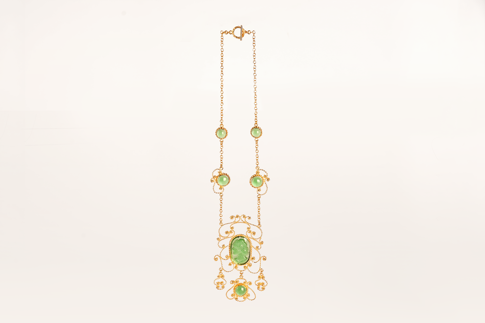

Not Gold, Not Emerald
2025 / Soju bottle, Brass, 18K plated
While studying jewelry design in high school and learning metal craft at university and graduate school, the works I created always carried the label of being “fake.”
Materials such as cubic zirconia, glass, and brass — the price of the material became the standard for determining authenticity.
But I questioned this idea. If the materials are considered “fake,” does that mean my work must also be defined as a fake without value?
The materials I use are not gold, nor are they emeralds.
However, my works contain my time, my skills, and the warmth of my hands.
The depth of form, technique, and meaning within them is no different from what is defined as “real.”
I believe that the concept of what makes jewelry “real” is determined not by the material itself, but by the intention and attitude behind it.
I want to speak to those who judge value only through visible price and brilliance.
“What you see is not gold, nor emerald.
But the technique, time, care, and meaning contained within it are my ‘real.’”